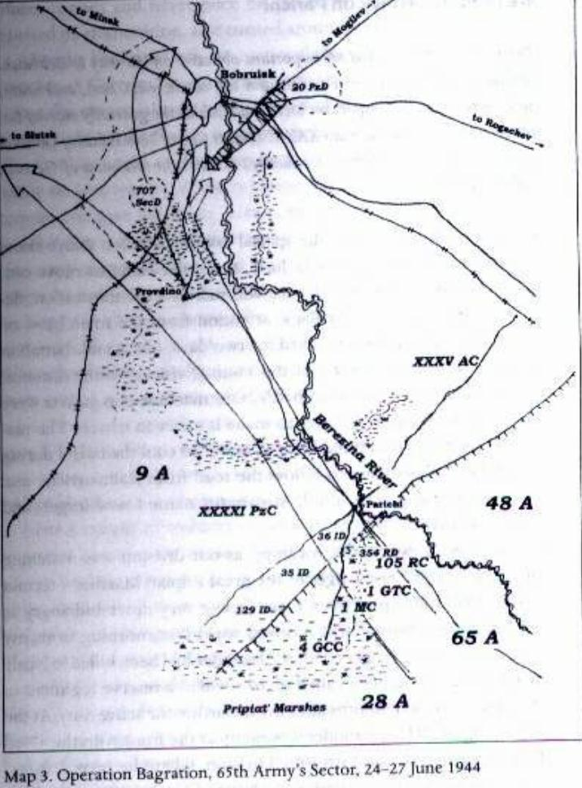

Chương 5

uối xuân năm 1944, Hồng quân chuẩn bị cho kế hoạch tấn công mùa hè, Phương diện quân Belorussian I và Tập đoàn quân 65 nằm trong kế hoạch này. Toàn bộ sĩ quan và binh lính Tiểu đoàn vận tải 91 nơi tôi được chuyển tới đều đang tập luyện và chuẩn bị. Chúng tôi vận chuyển đồ hậu cần cho các đơn vị và các kho nằm sát hậu tuyến Tập đoàn quân. Lúc này có lệnh kiểm tra hoạt động của tiểu đoàn vận tải, họ tìm thấy vài thiếu sót gì đó trong công việc của chúng tôi và tiểu đoàn trưởng Avdonin bị thiên chuyển sang công việc khác.
Vi phạm của tôi và sự trừng phạt
Trước khi chuyển đi Avdonin mời một bữa, mấy nhân viên điện đài và tôi đến tiễn ông đến nơi mới. Ông nói với chúng tôi: “Tôi nhận được nhiệm vụ mới và tôi sẽ mang các anh theo”. Ông ta đến nơi mới là Lữ đoàn vận tải ô tô số 18 rồi gửi anh tài xế riêng của ông là Litvin Zotov mang về cho chúng tôi một bức thư. Đó không phải là một mệnh lệnh mà là một bức thư riêng từ Avdonin với tư cách sĩ quan tiểu đoàn mời chúng tôi đến với ông. Đám nhân viên điện đài nhạy cảm hơn nên đã từ chối lời mời nhưng anh cấp dưỡng và tôi, do một sự nhầm lẫn nhất thời tai hại, đã vội vàng đến chỗ Avdonin. Chúng tôi tới và được ông sắp xếp vào nhóm binh sĩ dưới quyền trong tiểu đoàn. Hai tuần sau một kiểm sát viên đến, một đại uý SMERSH, và cho gọi chúng tôi đến sở chỉ huy tiểu đoàn. Ở đó anh ta cho biết: “Tôi được lệnh bắt giữ các anh mang về Tiểu đoàn vận tải 91. Mặc dù các anh không tự ý rời đơn vị nhưng các anh đã đi theo lời mời từ một bức thư chứ không phải thực thi một mệnh lệnh. Vì vậy, các anh bị coi là đào ngũ.”
Họ mang tôi trở lại trung đoàn cũ và đại uý mới Ratnikov tuyên án chúng tôi ba tháng trong đại đội trừng giới – Đại đội Trừng giới độc lập 261. Đại đội này bao gồm những binh lính, hạ sĩ quan và sĩ quan vi phạm kỷ luật hoặc phạm tội hình sự. Mới đây trong đại đội có cả một phi công IL-2 “Shturmovik”, trong một cơn ghen tay phi công này đã hạ sát chỉ huy phi đội, kẻ mà anh ta nghi ngờ được vợ mình săn sóc quá mức. Các thành viên còn lại của đại đội bị đưa vào đây vì đào ngũ, chậm trễ hay cướp bóc.
Theo kinh nghiệm của tôi, hình phạt đưa vào đại đội trừng giới chỉ là chuyển sang một đơn vị bộ binh có kỷ luật chặt chẽ hơn một chút so với thông thường, thí dụ thay vì điểm danh một lần mỗi ngày như bình thường họ điểm danh hai lần, các chỉ huy của đại đội cũng thường xuyên giám sát cấp dưới hơn. Nói cách khác, chỉ có một vài khác biệt nhỏ trong cuộc sống thường nhật giữa một người lính trong đại đội trừng giới với một người lính trong đại đội bộ binh thông thường. Khẩu phần của chúng tôi giống nhau cũng như số lượng vũ khí và đồ hậu cần được cấp. Vậy đâu là hình phạt? Các đơn vị trừng giới luôn được đưa vào những vị trí nguy hiểm nhất trên tuyến đầu, nơi vị trí quân địch mạnh nhất. Trước hết họ phải tiến hành những cuộc đột nhập hoặc tấn công trinh sát, bắt tù binh, và sau đó là dẫn đầu cuộc xung phong khi trận đánh bắt đầu. Nhưng cũng phải nói rằng, thật kỳ cục là sau các trận đánh những người sống sót trong đại đội trừng giới luôn được nghỉ từ ba đến năm ngày trong khi các đơn vị bộ binh thông thường vẫn phải tiếp tục chiến dịch bất chấp tổn thất. Trước Chiến dịch Bagration, họ tập trung đại đội trừng giới của tôi với các đại đội trừng giới khác để lập thành một tiểu đoàn xung kích trừng giới đặc biệt: Hai đại đội trang bị toàn tiểu liên với gần 100 người mỗi đại đội, một trung đội súng máy độc lập, và một trung đội trợ chiến nữa cũng trang bị toàn tiểu liên. Tất cả có 273 người trong tiểu đoàn xung kích trừng giới đó. Tôi được phân vào trung đội súng máy. Tiểu đoàn trưởng Vinogradov (một người tốt!) đến công sự của chúng tôi vào một buổi tối và nói: “Các đồng chí, hãy giúp chúng tôi nào: chúng tôi cần thành lập một trung đội trung và đại liên.” Có 13 người chúng tôi trong công sự – tất cả đều là tài xế – và tất cả đều tình nguyện tham gia. Trong khoảng hai tuần chúng tôi học cách sử dụng súng máy và trở nên thành thạo công việc đó, học cách tháo lắp súng và điều chỉnh đường bắn. Khi họ lập thành 4 tổ súng máy tôi trở thành chỉ huy một trong số đó. Tổ của tôi gồm 8 người và vũ khí chính là một khẩu đại liên Maxim kiểu 1910. Khẩu súng này làm mát bằng nước, băng đạn 250 viên 7.62mm, tốc độ bắn 520-580 phát/phút và là đại liên cơ bản của Hồng quân trong suốt cuộc chiến. Họ phát cho chúng tôi trang bị chiến đấu và đồ hậu cần. Trong đội người Số một mang nòng súng; Số hai mang giá súng; Số ba mang bệ đỡ, lá chắn và băng đạn; các thành viên còn lại trong đội mỗi người mang thêm hai dây đạn.
Chiến dịch Bagration bắt đầu
Lời chú của Britton:
“Mùa xuân năm 1944, thế chủ động chiến lược từ lâu đã chuyển sang tay phe Đồng Minh. Trên mặt trận phía Đông, một loạt cuộc tấn công dữ dội trong mùa đông trước đó đã phá vỡ vòng vây quân Đức quanh Leningrad ở phía bắc; ở phía nam, những đạo quân chiến thắng của Hồng quân đã quét sạch lực lượng phe Trục trên phần lớn Ukraine. Giờ là lúc bắt đầu kế hoạch tấn công mùa hè, sự chú ý của Stalin và Tổng hành dinh chuyển sang Belorusia, nơi Cụm Tập đoạn quân Trung tâm của Đức đang tập trung trong một mấu lồi trên chiến tuyến về phía bắc sông Pripiat, tại khu vực Vitebsk – Orsha – Mogilev – Bobruisk. Hitler tuyên bố các thành phố đó là các pháo đài, đó là kiểu cách ưa thích của hắn, mấu lồi của bọn Đức bao quanh một đầu cầu mong manh vượt sông Berezina.”
Ban công Belorussia, đó là cách bọn Đức gọi khu vực của Cụm Tập đoàn quân Trung tâm, có khả năng bị bao vây tiêu diệt. Hitler tin rằng chiến tuyến của Cụm Tập đoàn quân Trung tâm sẽ yên tĩnh và ít bị thử thách nhiều vào mùa hè năm 1944, vì vậy hắn đã phạm sai lầm khi chuyển hầu hết các sư đoàn thiết giáp trên Mặt Trận Phía Đông tiến về phía nam tới Ukraine, phía dưới sông Pripiat, nơi hắn tin rằng hướng tấn công chính trong mùa hè của quân đội Xô viết nhắm vào. Tuyến phòng ngự của Cụm Tập đoàn quân Trung tâm không sâu lắm, phần lớn lực lượng phòng thủ triển khai ngay tuyến đầu. Tổng hành dinh, vì vậy, tin rằng đang có điều kiện thuận lợi để thọc sâu, mở nhiều mũi tấn công Cụm Tập đoàn quân Trung tâm cùng theo một hướng chung là nhằm vào Minsk. Nếu thành công, nó sẽ dẫn tới việc bao vây tiêu diệt phần lớn lực lượng Cụm Tập đoàn quan Trung tâm đang bảo vệ chiến tuyến hiện nằm phía đông Minsk.
Kế hoạch tấn công của Tổng hành dinh có thể xem là một cuộc tấn công tổng lực vào cả hai cánh của Ban công Belorussia. Phía bắc, Phương diện quân Baltic một và Phương diện quân Belorussia 2 phối hợp tiêu diệt Tập đoàn quân Thiết giáp 3 “mất tên” (vì trên thực tế nó chẳng còn một sư đoàn thiết giáp nào) đang phòng thủ khu vực Vitebsk – Orsha, và sau đó tiến về Minsk từ phía bắc. Ở phía nam, Phương diện quân Belorussia một cần đánh bại Tập đoàn quân 9 Đức phòng thủ quanh Bobruisk và sau đó cũng tiến đến Minsk từ phía nam. Hướng trung tâm, Phương diện quân Belorussia 2 sẽ giáng những đòn mạnh mẽ vào khu vực được phòng thủ vững chắc nhất của Cụm Tập đoàn quân Trung tâm là khu vực Orsha – Mogilev, nó được phòng thủ bởi Tập đoàn quân 4 Đức. Nếu kế hoạch này thành công xem như Tập đoàn quân 4 đã lọt vào bẫy cùng với phần lớn Tập đoàn quân 3 Thiết giáp và Tập đoàn quân 9.[14]
Với sự bảo mật lớn và các biện pháp nghi binh, suốt tháng 5/1944, lực lượng tấn công Xô viết bình tĩnh dàn trận với quân số vượt trội đối phương trên toàn mặt trận Belorussia.[15] Nhưng quan trọng hơn họ tập trung với số lượng vượt trội binh lính, tăng và pháo ở những khu vực được chỉ định để chọc thủng chiến tuyến Đức, tại những nơi này lực lượng Xô viết mạnh hơn đối phương nhiều lần. Ví dụ, tại khu vực chiến tuyến của Phương diện quân Belorussia một (dài khoảng 240km), quân đội Xô viết đã tập trung lực lượng mạnh hơn lực lượng phòng thủ là Tập đoàn quân 9 Đức với tỷ lệ 2:1 về người, 3:1 về pháo lớn (từ 76mm trở lên) và 8:1 về xe tăng và pháo tự hành. Tuy nhiên, trong khu vực đột phá khẩu dài khoảng 15km ở phía nam Parichi, Phương diện quân Belorussia một mạnh hơn quân Đức gần sáu lần về người, 22 lần về pháo lớn và 16 lần về xe tăng và pháo tự hành.[16] Trước cuộc tấn công, tình báo và trinh sát Xô viết đã xác định tại khu vực Bobruisk do Tập đoàn quân 9 Đức phòng thủ (gồm các Quân đoàn 3, 55 và Quân đoàn Thiết giáp 41) có tối đa 12 sư đoàn bộ binh trên tuyến đầu phòng ngự và chỉ có 4 sư đoàn bảo an và một sư đoàn thiết giáp làm dự bị. Tập đoàn quân 9 đã thiết lập khu vực phòng thủ dày đặc nhất và tập trung lực lượng theo trục Rogachev – Bobruisk. Theo lệnh của Hitler, Bobruisk được xem là thành phố pháo đài và là trung tâm đề kháng. Chỉ huy Tập đoàn quân 9 rõ ràng đã cho rằng vùng đầm lầy phía nam trục này là không phù hợp cho việc tấn công. Vì thế, các vị trí phòng thủ ở phía nam Parichi đã không được củng cố thoả đáng và thường chỉ gồm những công sự lẻ loi bảo vệ một khu vực nhỏ nằm trong tầm bắn. Kế hoạch của Rokosovskii là lợi dụng điểm thiếu sót này trong khu vực phòng thủ của Tập đoàn quân 9. Ông dự định cho các Tập đoàn quân 3 và 48 chọc thủng tuyến phòng thủ Đức ở phía bắc Rogachev, trong khi Tập đoàn quân 65 và Quân đoàn Xe tăng Cận vệ số một “Sông Đông” sẽ lướt về phía bắc qua Parichi, cắt rời toàn bộ quân địch trên chiến tuyến với Bobruisk ở phía tây, sau đó hội quân với các Tập đoàn quân 3 và 48 để chiếm Bobruisk.
Theo kế hoạch của Rokosovskii trục tấn công phía nam sẽ phải vượt qua rìa phía bắc vùng đầm lầy lớn Parichi. Nó đòi hỏi tướng Batov phải tìm ra một vài con đường cho lực lượng của ông và những cỗ xe tăng của Quân đoàn Xe tăng Cận vệ một “Sông Đông” vượt qua đầm lầy và những vùng đất thấp đầy cây cối rậm rạp để tiến đến Bobruisk từ phía nam.
Ngày 22/6/1944, cuộc tấn công lớn mùa hè bắt đầu nhằm mục đích tiêu diệt Cụm Tập đoàn quân Trung tâm của kẻ địch. Nó được đặt tên là Chiến dịch Bagration, tên một vị tướng Nga nổi tiếng trong thời kỳ chiến tranh với Napoleon, Pyotr Bagration (1765-1812). Chúng tôi được bố trí tại huyện Kalinkovskii gần Ozarichi thuộc Belorussia, dưới quyền chỉ huy của Sư đoàn bộ binh 354. Trong nhiều tuần trước khi cuộc tấn công bắt đầu, chỉ huy Tập đoàn quân 65, Tướng P.I. Batov, đã kiểm tra điểm vốn được xem là có thể dùng để xuất phát tấn công tốt nhất cho tập đoàn quân. Đi cùng với một chỉ huy công binh, một chỉ huy tình báo và một số người nữa, ông đảo qua các vị trí sẽ nhận nhiệm vụ tiến công của Tập đoàn quân 65. Quân phòng thủ Đức ở đây khá mạnh vì khu vực này có nhiều đường tốt, rất thuận lợi cho xe tăng di chuyển.
Trong khi kiểm tra một khu vực đầm lầy trên chiến tuyến ở bên trái Parichi, họ nhận thấy một số lính trinh sát đi loại “giầy đầm lầy” tự đan. Chúng được làm từ thân cây cói được bọc ra ngoài ủng. Những chiếc giầy đầm lầy này làm giảm áp lực mỗi bước chân của binh sĩ, khi họ bước bùn dưới chân họ bị cô đặc lại và không làm họ sa lầy, nước thấm qua kẽ hở lớp đan ngoài và khi họ bước tiếp nó sẽ chảy ra khỏi giầy. một người lính người Belorussia sống ở khu vực này cho Batov biết đó là cách mà những thợ săn dùng để vượt qua đầm lầy. Batov suy nghĩ một lúc rồi quyết định sẽ đặt hướng tấn công chính ở đây, nơi bọn Đức ít trông đợi nhất. Thêm vào đó, từ đây xe tăng Hồng quân có thể cắt tuyến đường giữa Parichi và Bobruisk chỉ trong vòng 30 phút. (Xem bản đồ) Để có thể chuyển xe tăng và các trang bị nặng qua đầm lầy, Batov ra lệnh làm một con đường bằng ván gỗ. Những xúc gỗ làm ván được cắt xẻ cách chiến tuyến 15km-20km để bọn Đức không thể nghe được tiếng cây đổ và tiếng cưa, sau đó được đóng lại với nhau bằng nẹp sắt. Tất cả chúng được mang tới cách chiến tuyến khoảng 200m và được nguỵ trang lại. Theo cách đó con đường ván sẽ nhanh chóng được đặt ngay sau khi những bộ binh dẫn đầu vượt qua đầm lầy để thiết lập những “đầu cầu” ở phía bên kia.

Chúng tôi dẫn đầu cuộc tấn công vào Pairichi
Lời chú của Britton:
“Thị trấn Parichi là một mục tiêu quan trọng trên đường đến Bobruisk. Có nhiều con đường qua Parichi từ đủ các hướng đông tây nam bắc khiến thị trấn trở thành một giao lộ quan trọng trong khu vực có địa hình toàn đầm lầy này. Sư đoàn bộ binh 36 thuộc Quân đoàn Thiết giáp 41 Đức đóng giữ Parichi nhưng lời kể ngắn gọn của Litvin đã chứng thực sự yếu kém của quân phòng ngự Đức trong khu vực này.”
Ở địa vị nhỏ bé của mình, những người lính chúng tôi trong tiểu đoàn xung kích đặc biệt không hề biết mình đang đi đâu. Ngày 22/6 có lệnh di chuyển, chúng tôi không biết rằng đó đơn giản là một cuộc hành quân nghi binh để thu hút sự chú ý của bọn Đức khỏi mũi tấn công chính. Trong hai ngày chúng tôi chỉ hành quân, tiểu đoàn xung kích dẫn đầu cứ đi cho đến khi được Sư đoàn 354 cho nghỉ.[17] Ở khoảng cách này chúng tôi đã có thể nghe thấy âm thanh của trận đánh. Túi bọc khẩu đại liên của chúng tôi là loại không thấm nước, nó giúp cho việc hành quân được dễ dàng hơn, khẩu súng sử dụng tới 3 lít nước để làm mát nòng súng khi bắn. Lệnh tiếp theo dành cho chúng tôi là di chuyển theo một con đường xuất phát từ Kalinkovichi để sáng hôm sau vượt một con suối nhỏ (tôi quên mất tên) rồi chiếm Parichi. Mặt đất thật là lầy lội, sư đoàn tôi đang hành quân qua rìa phía bắc vùng đầm lầy lớn Pripiat – địa hình rất không thích hợp để chuyển quân. Tôi cảm thấy rất khó chịu và giận dữ khi hành quân vì vừa nhận được vào buổi sáng mấy dòng của mẹ tôi cho biết người em trai Alexander đã hi sinh trong một trận đánh ở Vitebsk. Cậu ta bị gọi nhập ngũ vào một trung đoàn dự bị ở Petropavlovsk hai tháng sau khi tôi tòng quân. Đầu năm 1942 Alexander ra mặt trận trong đội hình Trung đoàn 473 Bộ binh – Sư đoàn 15 Bộ binh với cương vị tiểu đội trưởng. Trong những trận đánh ở đông bắc Vitebsk gần làng Miskhi cậu ấy đã hi sinh vào ngày 25/12/1943.
Chúng tôi đến một quả đồi nhỏ ở đâu đó rất gần Parichi và dừng lại nghỉ trong những con hào đã được đào sẵn từ trước, bất ngờ từ bên kia một con suối nhỏ một chiếc Ferdinand nã đạn vào chúng tôi. Quả đạn đầu tiên rơi ngay gần con hào nơi chúng tôi đang ngồi và nổ tung trên triền dốc bên dưới. Mọi người nhanh chóng ẩn nấp trong công sự, tất cả 273 người chúng tôi. Chiếc Ferdinand chỉnh đường ngắm lên cao hơn một chút và bắn lần nữa nhưng lần này viên đạn bay qua đầu chúng tôi một cách vô hại. Chiếc Ferdinand bắn liền 15 phát nhưng không phát nào trúng mục tiêu. Chắc là đạn được của nó đã cạn nên nó đã quay lại và bỏ đi.
Sau khi chiếc Ferdinand bỏ đi, chúng tôi cẩn thận thò đầu lên khỏi chiến hào. một khẩu đại liên Đức đặt cạnh mấy cái cây bên kia suối, được báo động bởi những phát đạn của chiếc Ferdinand, đã phát hiện ra chúng tôi qua ánh phản chiếu từ những chiếc mũ sắt và nổ súng. Chỉ mới nghe tiếng viên đạn đầu tiên là tất cả chúng tôi đã lại lao mình xuống đáy hào lần nữa, và đương nhiên là chẳng ai trúng đạn. Khi loạt đạn thứ hai bay qua đầu, trung đội trưởng của tôi ra lệnh: “Litvin, khoá họng khẩu súng máy đó lại!” Tôi chọn một chỗ cao có đất bao quanh để đặt khẩu súng máy của mình, mấy người trong tổ lắp các bộ phận của súng lại trong khi những người còn lại chuyển nước mà chúng tôi vẫn vác theo dự trữ đổ đầy bao làm mát trước khi nổ súng. Tôi bảo người Số 2: “Sania, hôm nay chính tôi sẽ bắn để báo thù cho em trai tôi.” Khi khẩu súng máy Đức bắn lần nữa, tôi nã vào nó một tràng dài (15-20 viên đạn) bằng khẩu Maxim và sau đó thêm hai loạt ngắn nữa (5-6 viên mỗi loạt). Khẩu súng máy Đức lập tức câm tịt. Vài đồng đội của tôi chụp mũ sắt vào đầu gậy rồi giơ lên trên mặt hào nhưng bọn Đức không có phản ứng gì. Hiển nhiên là tôi đã hạ được hoả điểm súng máy đó. Sau vài phút im lặng, chúng tôi được lệnh xông lên vượt qua con suối. Ngay gần đó, những người đi đầu tiểu đoàn phát hiện thấy một đường hào chạy từ trên đồi xuống suối và chạy theo lối đi được che chở đó. Họ tìm được một chỗ nông và quay lại trong khi tôi bắt đầu hạ súng, sau đó chúng tôi cùng tiến đến suối để vượt qua sang vị trí hoả điểm địch. Bất thần chúng tôi nghe thấy tiếng rít của đạn cối. Rõ ràng một tay sĩ quan Đức nào đó đã được báo cáo là một đơn vị lớn bộ binh Nga đang tấn công nên đã phái những chiếc xe lắp cối 81mm đến khu vực bị đe doạ. Chúng tôi không được thông báo gì về sự xuất hiện của chúng, chỉ đến khi chúng nã đạn chúng tôi mới phát hiện ra. May mắn lớn cho chúng tôi, cạnh chỗ nước cạn nơi chúng tôi sắp vượt qua, trong những bụi cây có bốn cái hố lớn, chắc là chúng đã được đào làm công sự cho xe vào lúc nào đó. Mỗi cái hố rộng khoảng 4m, dài 9m và sâu 2m. Ngay khi nghe thấy tiếng đạn cối bay tới cả tiểu đoàn tôi đã lao vào trong những cái hố đó ẩn núp, ngã đè cả lên nhau. Tôi cảm thấy bị ai đó nhảy xuống trúng đầu còn chính mình thì nằm trên một người khác. Những viên đạn cối đầu tiên nổ xung quanh chúng tôi và bọn Đức nã không ít hơn 10 quả mỗi khẩu trong trận pháo kích rồi giảm dần số đạn bắn mỗi loạt.
Trận pháo kích của bọn Đức đã quét sạch mọi cây cối xung quanh khiến chúng chắc chắn rằng chẳng còn một người lính Xô viết nào trong tiểu đoàn tôi sống sót, vì vậy chúng tập hợp nhau lại rồi quay về Parichi. Tuy nhiên thực ra chẳng có một quả cối nào rơi trúng những cái hố và tất cả đã nổ quanh chúng tôi mà không gây thiệt hại gì. Chúng tôi bò lên khỏi hố, người đầy đất và mảnh vụn, nhiều người bị thâm tím nhẹ vì húc vào nhau khi lao xuống hố. Chúng tôi vượt suối qua chỗ cạn và sang đến bờ bên kia thì thấy một đống thùng đựng đạn đại liên và vài vết máu trên cỏ. Bọn Đức đã đặt hoả điểm súng máy ở đây.
Giờ đã gần tối, chúng tôi có thể thấy được bọn Đức đã đặt các hoả điểm trong một vành đai cây cối trước mặt nhờ những tia nắng đang tắt dần, nhưng chúng không bắn vào chúng tôi thêm lần nào. Khẩu súng máy của tôi được lệnh yểm trợ cho một trung đội tiểu liên và chúng tôi bắt đầu thảo luận với nhau kế hoạch tiến vào Parichi sáng mai. Cạnh con đường dẫn vào vành đai cây cối bên ngoài Parichi tôi tìm thấy một bụi cây phỉ rậm rạp, tôi bèn đặt khẩu súng máy ở đó. Từ vị trí này tôi lên kế hoạch yểm hộ cho những tay súng trong trung đội kể trên tiến đến khu vực vành đai cây cối mà bọn Đức đang chiếm giữ. Tuy nhiên sáng hôm sau khi chúng tôi bắt đầu cuộc tấn công bọn Đức đã không còn trong vị trí mà chúng chiếm giữ đêm qua. Chúng tôi thận trọng tiến về Parichi và thấy rằng bọn Đức đã rút khỏi con đường nối Parichi với Kalinkovichi. Ở đây con đường cắt qua một cánh đồng lúa mạch và một bãi cỏ trên đó có nhiều ngôi mộ lớn. Bọn Đức chỉ bắt đầu đánh trả khi rút về gần Parichi. Những tay súng tiểu liên của quân ta vừa tiến lên vừa bắn, chúng tôi theo sau, vừa đi vừa chọn những chỗ thích hợp để yểm trợ cho bộ binh bằng những khẩu súng máy của mình. Khi bọn Đức rút về đến ngoại vi Parichi, chúng dừng lại ẩn núp và sự kháng cự của chúng tăng lên dần. Chúng tôi tiến lên chậm chạp và bắn hết một số lượng đạn lớn. Sau 3h kể từ khi bắt đầu tiến công lúc sáng, đạn dược của các tay súng tiểu liên đang cạn và hoả lực của họ suy yếu dần.
Bọn Đức nhận thấy hoả lực quân ta yếu đi và ngay lập tức phản công, hy vọng đẩy chúng tôi ra xa Parichi. Chúng rời chỗ núp, vừa xông lên vừa bắn. Cuộc phản công sắc bén của quân Đức làm chúng tôi hoảng hốt và lộn xộn rút lui khoảng 200m. Các đồng đội trong trung đội súng máy của tôi đã bỏ lại ba khẩu đại liên nhưng còn kịp tháo khoá nòng và mang đạn dược đi (cả trung đội súng máy của tiểu đoàn chỉ có bốn khẩu). Bọn Đức sau đó đã tìm được những khẩu súng này và phá huỷ chúng bằng lựu đạn. Riêng tôi tìm được một chỗ đặt súng trên một ngôi mộ trên bãi cỏ. Khi cuộc phản công của bọn Đức nổ ra, chúng tôi có thể nghe thấy tiếng động cơ xe tăng Đức ở Parichi, rồi một pháo đội cối xuất hiện ở ngoại vi thị trấn và bắt đầu triển khai. Bằng khẩu đại liên duy nhất còn lại của mình, tôi nổ súng vào chúng ngay từ khoảng cách 600m. Tôi nhìn thấy một hay hai tên Đức ngã xuống, nhưng tất nhiên phần lớn chúng vẫn còn sống và đặt cối chuẩn bị bắn. Quả đạn cối Đức đầu tiên nổ sau vị trí của tôi chừng 30m, quả thứ hai nổ cách chúng tôi 20m về phía trước. Chúng đã đặt xong cự ly bắn vào chúng tôi, vì vậy tôi ra lệnh cho tổ súng máy của mình chuyển sang trái. Chúng tôi đã chuyển vị trí an toàn nhờ sự che chở của nấm mộ lớn nơi tôi đã đặt súng. Chỉ vài giây sau khi chúng tôi rời đi, nấm mộ đằng sau chúng tôi đã biến mất trong màn khói đen sì của những tiếng nổ tạo bởi trận pháo kích của súng cối Đức. một người trong tổ bị thương nhẹ nhưng tất cả chúng tôi đều thoát được và giấu mình dưới những bụi cỏ cao. Đúng vào lúc đó Trung đoàn 1199 thuộc Sư đoàn 354 Bộ binh tham chiến, mang theo đầy đủ đạn dược. Trận đánh trở nên dữ dội. Tên lửa “Katiusha” rít lên bay qua đầu chúng tôi lao về phía bọn Đức. Tôi nã đạn từ vị trí mới cho đến khi hết sạch đạn vì các đồng đội trong tổ đã bỏ chạy trước. Vâng, tôi đã bị bỏ lại một mình với khẩu súng máy khi tất cả những thành viên còn lại trong tổ đã chuồn mất. Đó không phải là một sự vi phạm kỷ luật mà là một sự suy xét khôn ngoan thông thường. Họ đã hết đạn súng cá nhân và nếu không được tiếp tế thêm đạn tiểu liên thì họ chuồn thôi. Thật không may là họ đã bỏ chạy mang theo cả những băng đạn đại liên và ai đó còn chiếm luôn cả khẩu tiểu liên của tôi khi rút. Vậy là tôi rời trận địa với khẩu súng máy không đạn trong khi họ vẫn giữ tất cả số đạn đó.
Chợt một viên đạn bay véo qua đầu tôi và tôi hiểu ngay mình đã bị bọn Đức đặt vào tầm ngắm. Tôi nằm rạp xuống cỏ và dùng một dải băng đạn đã bắn hết buộc một đầu vào khẩu súng máy còn đầu kia vào chân mình. Tôi bắt đầu bò trở lui, kéo khẩu súng theo sau, tìm cách thoát khỏi đường ngắm của bọn Đức lúc này đã phát hiện ra tôi. Tôi không biết đã bò được bao xa nhưng có lẽ chỉ được khoảng 5m-6m thì thấy một người lính Nga tay cầm súng trường đang tiến tới. Anh ta là lính Trung đoàn 1199. Ngay lúc đó thêm mấy phát đạn bay sát qua người tôi, anh lính phát hiện ra tên Đức vừa bắn và hạ hắn bằng chỉ một phát bắn trả. Anh ta bình tĩnh thổi nòng súng của mình rồi mới hỏi tôi: “Còn thằng Đức nào khác muốn thế không?” Sau đó tôi được biết tên anh ta là Turchin. Tôi đề nghị anh ta giúp mình kéo khẩu súng máy đến vị trí mới và anh ta đồng ý. chúng tôi đến nơi, Turchin phụ giúp, tôi phát hiện ra một thành viên tổ súng máy của mình và gọi. Lúc này không hiểu sao bọn Đức lại phát hiện ra tôi một lần nữa và nã vài quả đạn cối vào chỗ tôi. Tôi lao cả người vào trong một cái hố cái nhân gần đó. Những quả đạn nổ tung và hầu như chôn kín tôi trong một thác đất cát đổ vào người. Chỉ còn mỗi đầu và một cánh tay tôi còn nhô lên khỏi mặt đất và tôi không thể thở hay cử động được tí gì. Đúng lúc đó 2 gã đội mũ nhà binh màu xanh lá cây của cái gọi là đơn vị chặn hậu đến chỗ tôi[18], một người tỉnh bơ hỏi: “Có gì đấy?” Tôi nói: “Đồng chí, giúp tôi với!” Họ moi tôi lên rồi hỏi: “Sao anh lại ngồi đây? Tiến lên!”
Tôi trả lời: “Tiến lên với cái gì? Tôi chỉ có một khẩu súng máy rỗng không, chẳng có đồng đội hay đạn dược. Khi những cái đó tới, tôi sẽ tiến lên.” Đó là lần duy nhất trong suốt cuộc chiến tranh tôi nhìn thấy những người lính còn sống của đơn vị chặn hậu. Trên thực tế cả hai người này là lính biên phòng, lính biên phòng thường được đưa vào các đơn vị chặn hậu này.
Tiểu đoàn trưởng của tôi nhận được lệnh rút khỏi trận đánh vì Trung đoàn 1199/Sư 354 Bộ binh đã tiếp chiến và chiếm được làng Parichi. Lúc này tôi đã nhập cùng một nhóm gồm 11 người cùng trong tiểu đoàn trừng giới, bao gồm năm tay súng trong tổ súng máy của tôi và sáu người mang tiểu liên trong trung đội trợ chiến. Chúng tôi nhận được lệnh quay lại bếp dã chiến được đặt trong một cái hố lớn không xa Parichi. Khi chúng tôi quay về, những người còn lại trong tổ của tôi cũng nhập bọn. Lúc mới về đến bếp dã chiến, tôi đã sợ tiểu đoàn mình bị thiệt hại nặng vì không thấy nhiều người. Chúng tôi vồ lấy đồ ăn và ăn vội vàng rồi để lại một khẩu súng máy và hai người gác khu vực bếp, số còn lại quay lại Parichi để xem xét tình hình. Khi đang tiến về Parichi chúng tôi phát hiện ra một vệt máu. Chúng tôi bèn lần theo nó vào trong một công sự Đức và bắt gặp một tên Đức có vẻ đã chết, chúng tôi lại gần để lần túi hắn tìm tài liệu. Nhưng hoá ra hắn vẫn còn sống, trước khi chúng tôi đến bên, hắn chồm dậy, quỳ sụp xuống vào kêu lên bằng tiếng Nga: “Người Nga đây, đừng bắn!” Turchin ra lệnh: “Giơ tay lên” Tên Đức trả lời: “Tay tôi giơ rồi đây thôi.” Hoá ra hắn là người Slovak. Chúng tôi mang hắn theo và gửi vào điểm tập kết tù binh. Tay Slovak không phải người xấu, mặc dù phải vừa đi vừa giữ quần bằng tay sau khi Turchin không kiếm đâu ra sợi dây nào khác để trói hắn, hắn vẫn luôn mỉm cười suốt quãng đường. Ở Parichi chúng tôi tìm được một hầm rượu còn một ít rượu vang. Chúng tôi vồ lấy chúng rồi mang về trại và phát hiện ra rằng trong khi chúng tôi đi, nhiều người trong tiểu đoàn xung kích trừng giới đã quay về bếp dã chiến khi thấy tổ súng máy của tôi được cho ra nghỉ. Tôi chia rượu cho những người trong tổ, tất cả chúng tôi đều hy vọng được một giấc ngủ ngon nhưng lúc đó mới là buổi tối, có lệnh đến yêu cầu chúng tôi tới Bobruisk.
Cuộc chém giết ở Bobruisk
Tiểu đoàn tôi lên đường tới Bobruisk cùng với phần còn lại của Sư đoàn 354 Bộ binh, trong khi đó các bộ phận khác của Tập đoàn quân 65 phối hợp với Quân đoàn Xe tăng Cận vệ một “Sông Đông” vượt đầm lầy ở phía sau. Cùng lúc đó, một đơn vị kỵ binh cơ giới nhằm hướng thành phố Slutsk, phía tây Bobruisk. một cách đều đặn, chúng tôi tiến cật lực về Bobruisk. Mọi người hành quân mà không mang đầy đủ trang bị chiến đấu, và chúng tôi kéo khẩu súng máy đi cùng với họ. Đột nhiên tôi nhận ra lá chắn súng bị mất. “Vasen’ka, lá chắn đâu?” Tôi hỏi. Anh ta đã quẳng nó sang một bên để cho nhẹ bớt và khiến việc hành quân dễ dàng hơn. Tôi nói với anh ta: “Tôi không cần biết, tốt hơn cho anh là cái lá chắn đó nên tái xuất hiện ở chặng nghỉ sắp tới.”
Sau khi đi được khoảng 12km về phía Bobruisk, tiểu đoàn dừng lại nghỉ và đặt ba chốt gác trên con đường mà các binh sĩ tiểu đoàn đang nằm rải rác. Tại chỗ dừng nghỉ, thêm khoảng 30 người nữa của tiểu đoàn tôi nhập bọn, họ bị rớt lại phía sau ở Parichi và giờ họ đến theo cách rất sung sướng: bám xe đi nhờ những cỗ pháo tự hành. Họ còn mang theo được một thùng rượu 50 lít. Có thêm họ tiểu đoàn tôi giờ đã có khoảng 200 người. Tại những điểm dừng nghỉ tiếp theo chúng tôi lại gặp thêm nhiều người trong tiểu đoàn trừng giới, như vậy thương vong của chúng tôi ở Parichi không lớn như tôi đã sợ lúc đầu. Hôm sau, ngày 28/6 chúng tôi được lệnh ngừng hành quân và đào công sự chuẩn bị phòng thủ. Bọn Đức liên tục quấy rầy vị trí của tôi bằng những phát đạn lửa nhưng không ai bên ta trúng đạn. Chúng tôi đã đặt hoả điểm súng máy của mình cạnh một căn nhà nhỏ. Đêm đó, quân ta cho trinh sát tới các vị trí Đức đối diện và diệt được mấy khẩu súng máy đã quấy rầy chúng tôi. Họ đã tiêu diệt liền mấy vị trí quân Đức và tìm thấy hai khẩu súng máy. Sáng hôm sau, chúng tôi chờ đợi cuộc xung phong vào Bobruisk sẽ bắt đầu vào 10h sáng. Trong khi chờ đợi, một con chó nhỏ chạy vào vị trí của chúng tôi, trông nó như một con chó rừng. Nó cứ chạy tới lui xung quanh cho tới khi chúng tôi chịu đi theo. Con chó dẫn chúng tôi tới một công sự ngập nước. Khi chúng tôi nhìn vào trong thì phát hiện ra có gì đó chuyển động trong nước. một trung sĩ bắn một phát PPSh và chúng tôi nghe thấy ai đó kêu: “Người Nga, đừng bắn!” Từ trong công sự bò ra tám tên lính Slovak sũng nước. Chúng đã được lệnh cho nổ tung khẩu cối 81mm của mình để nó khỏi rơi vào tay chúng tôi, thay vì làm thế, chúng lại trốn kỹ trong công sự. Chúng tôi gửi chúng vào điểm tập kết tù binh. Sau đó, chúng tôi tiến lên, thỉnh thoảng bị một vài viên đạn làm phiền. Khi chúng tôi tiến, những người Belorussia ra hiệu từ trong những căn hầm, vài người còn đề nghị cung cấp thông tin về bọn Đức. Những cậu nhóc có vẻ biết mọi điều về bọn Đức – chúng đang ở đâu và làm gì. Đám trẻ dẫn chúng tôi tới một nghĩa địa ở tây bắc Bobruisk. Dọc đường, chúng tôi thu được rất nhiều vũ khí và trang bị mà bọn Đức bỏ lại. Chúng tôi còn thấy nhiều rượu. Tôi cảnh báo các thành viên trong tổ không được uống. Có vẻ bọn Đức cố tình bỏ lại nhiều rượu để chúng tôi tìm thấy khi tiến quân, khi đó những người lính Nga sẽ uống say xỉn và chúng có thể chộp được chúng tôi chỉ bằng tay không.
Vâng, quả thật một số lính Nga đã xỉn, nhưng không phải tất cả. Tôi còn nhớ một tình tiết liên quan đến một người đồng đội hôm đó đã không thể cưỡng lại sự cám dỗ của rượu. Khi đang trên đường tiến đến Bobruisk từ phía tây, chúng tôi dừng lại gần một nhà thờ trông ra một quảng trường nhỏ và một nghĩa địa lớn, trong nghĩa địa mọc đầy những cây bụi. một chiếc tăng Đức đang tắt máy nằm giữa quảng trường, không xa bức tường vây của nhà thờ. Tôi chọn vị trí đặt khẩu đại liên Maxim sau tường nhà thờ. Đó là một vị trí tuyệt vời để bắn về hướng nghĩa địa trong khi toàn bộ quảng trường trải ra trước tầm nhìn của chúng tôi rõ ràng như lòng bàn tay. Trong khi xạ thủ đặt súng, tôi lại gần chiếc tăng Đức bị bỏ lại để kiểm tra. Những khẩu súng máy của nó vẫn nằm im và tôi nhận thấy trong chiếc xe tăng còn khá nhiều đạn. Tôi quay lại tổ súng máy của mình. Ngay khi về tới nơi thì súng nổ, đó là khoảng 2h chiều. Đúng như tôi dự đoán, bọn Đức đang thử tổ chức một cuộc phản công xuyên qua khu vực nghĩa địa. Vừa quan sát các vị trí địch trong nghĩa địa, tôi vừa ra lệnh cho tay xạ thủ của mình hạ chúng. Sau đó tôi để anh ta lại và bò đến chỗ chiếc tăng Đức, nó đứng cách hàng rào nghĩa địa chỉ khoảng 50m. Tôi đến được chiếc tăng và trèo vào trong. Lúc này tôi cảm thấy mình như cá gặp nước. Tôi lên đạn khẩu súng máy trên chiếc tăng và bắt đầu bắn vào tất cả các vị trí địch mà mình có thể nhìn thấy được, sau đó quét từ bên này sang bên kia nghĩa địa. Khi cuộc chạm súng bắt đầu, nhiều bộ binh ta đang ở gần đấy chưa vào vị trí. Họ nhanh chóng đổ xô tới, dàn trận và bắt đầu tham chiến. Khoảng 10 phút sau khi trận đánh bắt đầu, một chiếc xe ngựa kéo hiện ra ở cạnh nhà thờ trên đó có ba chú lính. một người quất lũ ngựa trong khi hai người còn lại sử dụng một khẩu súng máy đặt trên xe. Cỗ xe lao qua quảng trường đến cách nghĩa địa chừng 80m thì dừng và quay đầu lại. Khẩu súng máy trên xe nã nhiều loạt về phía quân địch, sau đó chiếc xe lại quay đầu và tiến tiếp vào nghĩa địa. Trong khi đó ở phía phía bên kia nhà thờ, một tay súng say xỉn cưỡi một con ngựa đang lồng lên xuất hiện. Tay phải anh ta cầm khẩu tiểu liên PPSh băng tròn, tay trái thì cầm một chai bia. Anh ta thúc con ngựa di chuyển bằng cách đấm vào lưng nó. Thỉnh thoảng anh ta nã bừa một loạt đạn và ngay tiếp sau là giơ chai làm một tợp.
Bọn Đức đương nhiên nhận thấy rằng sẽ là tự sát nếu cố xông qua quảng trường trống, vì vậy sau khoảng 30 phút chúng giảm dần cường độ bắn. Ngay lúc đó, dưới sự yểm trợ của hai khẩu súng máy của chúng tôi, đám bộ binh xung phong qua nghĩa địa, đuổi bọn Đức chạy tán loạn và tiêu diệt một số tên. 5h chiều ngày 29/6/1944, tiểu đoàn tôi đến ngoại ô phía tây bắc thành phố Bobruisk theo con đường cao tốc đi Minsk. Sư đoàn 354 Bộ binh cùng với tiểu đoàn xung kích của tôi dừng lại và đào công sự phòng ngự tại một địa điểm không xa tuyến đường, quay mặt về hướng đông. Bọn Đức đang phòng thủ Bobruisk giờ đã rơi vào tròng. Cách vị trí của chúng tôi 2km về phía đông có hai ngôi làng nhỏ, trong đó có dấu hiệu cho thấy quân địch bị bao vây nhưng chưa bị tiêu diệt đang tập trung. Chúng tôi cho rằng dưới sự che chở của màn đêm, bọn Đức tại đó có thể thử chọc thủng vòng vây về phía tây, vượt qua con đường cao tốc đi Minsk để chạy vào rừng. Từ vị trí của chúng tôi có một hàng cây ngăn cách với một cánh đồng lúa mạch lớn trải dài tới tận hai ngôi làng. Chúng tôi đặt khẩu súng máy trên một mô đất nhỏ dưới gốc cây nhìn ra con đường cao tốc, như vậy trong trường hợp cần thiết chúng tôi có thể quét đạn dọc con đường dù quân địch có tới từ Minsk hay Bobruisk. Trước vị trí có một khoảng trống rộng khoảng 35m giữa những cái cây cho phép chúng tôi bắn qua cách đồng lúa mạch nếu bọn Đức định tiến qua đó. Sau khi đặt súng, lấy một vài điểm ngắm chuẩn, chúng tôi ngồi xuống nghỉ. Lúc đó là khoảng 6h tối, sau một ngày dài nóng bỏng, tôi tháo ủng, nó đã mòn vẹt vì bị sử dụng liên tục hơn một tuần. Tôi lau chân bằng rượu chứa trong cái bình dẹt mang theo để làm mát chúng. Ánh sáng đang tắt dần và chúng tôi ăn tối vội vàng.
Bất thần chúng tôi nghe thấy tiếng đạn rít qua đầu trên những ngọn cây. Bọn Đức đang nã đạn nổ, những quả đạn rơi xuống và nổ tung trên những cành cây, trên đầu chúng tôi. Tiếng súng rền vang. Mọi người vớ lấy vũ khí và kiểm tra lại đạn dược. Gần vị trí khẩu súng máy của tôi có nhiều xe ngựa chở đồ hậu cần và lính đánh xe, phần lớn họ khoảng hơn 50 tuổi và chưa từng có kinh nghiệm chiến đấu. Sự hoảng loạn bắt đầu xảy ra, họ bắt đầu đóng yên cương để chuồn. Tôi quay súng máy chĩa vào họ và quát: “Đứng đấy, cấm chạy!” Nhưng tay lính trẻ làm theo tôi và bảo họ: “Nằm xuống, cầm lấy vũ khí và cùng chúng tôi đánh đuổi bọn Đức!” Họ tuân lệnh.
Đột nhiên một đội hình lớn quân Đức tiến từ trong làng ra về hướng con đường cao tốc đi Minsk, phải đến 10.000 tên. Chúng tiến thành hàng như trong một cuộc duyệt binh, chiều ngang khoảng 100-120m và chiều dọc có lẽ không ít hơn 1km. Chúng nhằm hướng phía bên trái chúng tôi. Giữa hàng quân có hai chiếc ô tô, mỗi chiếc kéo theo một khẩu Oerlikon của Mỹ[19], rất giống loại quân ta vẫn sử dụng, có lẽ quân ta đã để nó rơi vào tay bọn Đức. Hai khẩu pháo đó nã đạn vào các vị trí ta, hàng quân Đức có vẻ như định chọc thủng chiến tuyến quân ta tại đây, vượt qua con đường cao tốc đi Minsk và tiến vào khu rừng nơi chúng tôi đang đóng giữ. Ngay khi tiến đến con đường, hàng quân Đức chuyển thành những lớp sóng người và xung phong về phía trước. Từ vị trí quan sát của tôi, cánh trái quân Đức trải dài khoảng 1.200m. Tôi nã đạn vào bọn Đức, không để chúng tiến vào vị trí của mình. Bọn Đức xếp sát nhau và bắn vào cái khối đó thì không thể trượt được. Khi chỉ huy của chúng tôi phát hiện hàng quân Đức đang cố phá vỡ vòng vây quân ta ở đây, họ chuyển gấp một pháo đội chống tăng đến yểm trợ cho chúng tôi, 12 khẩu pháo được tháo khỏi xe kéo ngay trước hàng quân Đức và bắt đầu nhả đạn. Đầu tiên họ bắn bằng đạn nổ mảnh, sau đó khi bọn Đức ồ ạt xông vào đến tầm, họ chuyển sang đạn ghém. Khi đã bắn hết sạch đạn ghém những khẩu pháo chuyển sang bắn bằng bất cứ loại đạn gì còn lại, thậm chí cả đạn xuyên giáp. Trận đánh diễn ra dữ dội cho đến khi đêm xuống, khi thấy đã mất đến một nửa lực lượng, phần lớn bọn Đức chạy trở lại làng nhưng vẫn có khoảng 1.500 tên Đức chọc thủng được vòng vây và chạy thoát. Trên chiến địa giờ còn lại hàng đống xác lính Đức và vô số tên bị thương. Sáng hôm sau, chúng tôi tỉnh dậy và nhìn khắp bãi chiến trường. Tất cả im lặng, không có một phát súng. Cánh đồng lúa mạch đã biến thành màu xám xịt vì bị che kín bởi quân phục của những tên Đức đã ngã xuống, xác của chúng nằm chồng chất lên nhau. Đó lại là một ngày nóng bỏng nữa. Khẩu súng máy của tôi vẫn tiếp tục hướng về phía ngôi làng nơi phần còn lại của lực lượng Đức đã rút vào. Đến 11h trưa, một mùi hôi thối bắt đầu xông lên.
Đến trưa, tôi và người đồng đội là Alexander (Sashka) Shulepov quyết định đến ngôi làng để xem xét. Bộ binh Nga đã xông vào làng và vây bắt tù binh. Tôi để tay xạ thủ lại phụ trách khẩu súng máy còn mình và Sashka kiểm tra lại để chắc chắn rằng băng đạn tròn của hai khẩu tiểu liên của chúng tôi còn đầy đạn. Bọn Đức ngồi ở khắp nơi và nhìn chúng tôi một cách hoàn toàn nhẫn nhục. Không thấy tay sĩ quan nào, có lẽ chúng đã bị bắt hoặc đã chết trong trận đánh hôm qua. Bọn Đức hiểu rằng chúng đã rơi vào bẫy và chỉ còn chờ quân ta đến bắt. Chúng chỉ dám liếc nhìn chúng tôi khi chúng tôi đi qua, sợ rằng chúng tôi có thể bắn chúng. Chúng tôi đi dọc con đường chính của làng dài độ 400m thì bất thần nghe thấy tiếng gào thét chói tai và tiếng than khóc ầm ĩ phát ra từ một gia đình gần đó. Chúng tôi tới kiểm tra và thấy một bà già đang khóc bên xác chồng. một phụ nữ trẻ nói một hai tên Đức đã dừng lại chỗ này hôm qua đòi cung cấp trứng và sữa. Những người ở đây chả còn gì, vì vậy bọn Đức đã hành quyết ông cô ta ngay tại chỗ. Đúng lúc đó một hàng tù binh Đức đi qua trước cửa nhà, bà già đau khổ nhận ra thủ phạm trong đám tù binh. Bà già và mấy người hàng xóm lao tới chỗ người dẫn giải và nói với anh lính gác đó những gì hắn đã làm. Đó là một tên Đức cao và gầy. Mọi người yêu cầu anh lính gác lôi tên tù đến chỗ bà già, đầu tiên anh ta không chịu nhưng sau một lúc bị vật nài lẵng nhẵng, anh ta cũng giao tên tù binh ra. Bà già lao vào tên tù và trong cơn giận dữ đã hầu như xé hắn ra làm nhiều mảnh bằng tay không. Chúng tôi quay lại vị trí súng máy giữa những hàng cây của mình và vượt qua một hàng tù binh Đức khác. Có một người trẻ trông rất cường tráng khoẻ mạnh đi trong hàng có vẻ không phải người Đức. Sashka hỏi hắn: “Mày là người Nga hả?” Hắn trả lời trôi chảy bằng tiếng Nga: “Vâng, từ Krasnoiarsk.” Hắn đã bị bọn Đức bắt ngay trong tháng đầu chiến tranh và sống dở chết dở trong trại tù binh. một hôm có tay sĩ quan Đức đến trại để tuyển quân cho quân đội của Vlasov.[20] Anh chàng Nga này đã tình nguyện tham gia với hy vọng một ngày kia sẽ trốn thoát bằng cách nào đó sau khi khoẻ lại. Nhưng hắn đã đến một nơi bị vây quanh bởi bọn Đức và không bao giờ tìm cách bỏ chạy. Hắn chưa bao giờ được phục vụ ở tiền tuyến mà ở trong các đơn vị chống du kích ở hậu phương. Hắn nói mình được cho ăn mặc đầy đủ. Hắn bảo chúng tôi: “Ba năm trôi qua mà như chỉ ba ngày.”
Tay tù binh nói hắn không ân hận vì đã phục vụ quân đội Đức hay cảm thấy tiếc vì tạo thêm gánh nặng cho chúng tôi, những người lính Hồng quân. Chúng tôi không thể tiếp tục đứng nghe hắn nói những điều đó, thay vào đó chúng tôi yêu cầu người lính dẫn giải tù binh trao “người đồng bào” này cho chúng tôi. Anh ta nhường hắn cho chúng tôi rồi đi thẳng. Chúng tôi dẫn tên tù binh ra vệ đường, hắn nói: “Tôi biết các anh sắp bắn tôi, nhưng tôi không cầu xin các anh tha. Nếu tôi ở vị trí các anh, tôi cũng sẽ bắn ngay.” Shulepov không buồn quan tâm đến lời hắn mà nã luôn mấy phát vào bụng và ngực tên Nga phản bội. Hắn vẫn đứng yên, chỉ hơi nhăn mặt hỏi: “Đó thực sự là cách anh bắn tôi sao? Nào, cho thêm phát nữa đi.” Sashka bắn tiếp một tràng ít cũng phải 12 viên vào ngực và cả đầu hắn, tên phản bội ngã xuống. Tất nhiên Sashka có thể bị trừng phạt vì vi phạm kỷ luật, nhưng người ta còn có thể đưa anh ta vào đâu được nữa? Anh ta đã ở trong tiểu đoàn trừng giới rồi mà. Sau này, tôi đã bị dằn vặt vì những việc làm tàn nhẫn và cảnh tượng đẫm máu đó, tôi đã phải vật lộn để lấy lại được sự thăng bằng. Đó là một việc kỳ lạ. Trong trận đánh ở Parichi, tôi có cảm giác khác. Khi chiến đấu, mỗi phát đạn tôi bắn đi có thể xuyên qua một thân người, tôi giết nhiều địch hết mức có thể vì chúng đã giết em trai tôi, và sau đó tôi bỏ qua không nghĩ tới. Nhưng bây giờ, trước cái chết diễn ra ngay trước mắt của hai tên địch tay không vũ khí tôi có cảm giác hoàn toàn khác, thậm chí là dù chúng xứng đáng nhận cái chết như vậy. Vâng, công lý đối với hai kẻ không vũ khí ấy đã được thi hành, nhưng việc thi hành đó bản thân nó cũng là một việc ghê tởm – và chúng tôi cần chấm dứt điều đó, chấm dứt mãi mãi.
Ngày 1/7, chúng tôi vẫn tiếp tục ở vị trí cũ dưới những hàng cây trông chừng tuyến đường cao tốc đi Minsk. Chúng tôi thay phiên nhau quan sát bên những khẩu súng máy về cả hai hướng. Đến trưa, tiểu đoàn trưởng ra lệnh cho tất cả các sĩ quan chuẩn bị cho buổi tuyên dương các chiến công được thực hiện suốt từ Parichi đến Bobruisk. Trung uý trung đội trưởng của tôi chọn tôi và một người nữa tham gia đội nghi thức danh dự. Chúng tôi được cho biết tên những người lính được vinh danh và tóm tắt chiến công của họ. Ngoài việc được đưa vào đội danh dự, tôi còn được lệnh chuẩn bị cho việc chính mình được tuyên dương. Tên tôi đã được đưa vào danh sách đề nghị tặng thưởng Huân chương Sao Đỏ vì đã giữ được khẩu súng máy trong suốt trận đánh trước Parichi và vì đã chính tay mình tiêu diệt một chi đội súng máy địch trong cuộc phản công của bọn Đức tại khu vực nghĩa địa trên đường tiến vào Bobruisk. Khoảng 20 người trong tiểu đoàn trừng giới của tôi đã được nhận huân huy chương. Đến ngày 3/7/1944, tại một vị trí bình thường trên con đường giữa Bobruisk và Minsk, tiểu đoàn trưởng cho biết rằng tôi không được nhận vinh dự nào hết, thay vào đó tôi được cho ra khỏi tiểu đoàn trừng giới ngay lập tức. Họ cũng cho Shulepov ra cùng với tôi. Thế là kết thúc sự nghiệp làm chỉ huy tổ súng máy trong tiểu đoàn trừng giới của tôi và tôi chuyển sang một đơn vị bộ binh. Shulepov và tôi được đưa vào Sư đoàn Bộ binh Cờ Đỏ 354 “Kalinkovichi”. Các đồng đội trong tiểu đoàn trừng giới vẫn ở lại chỗ cũ, tôi chuyển chức chỉ huy tổ súng máy cho tay xạ thủ và nói lời từ biệt những người đồng chí. Chúng tôi đã chuộc xong tội lỗi của mình trước Đất Mẹ, trước pháp luật và trước đồng đội.